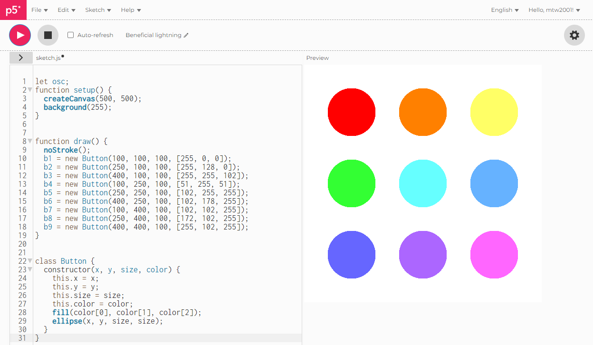

This assignment was an introduction to the p5.js Javascript library, which has many features
for creating art. The project consists of six sketches of varying complexity. Below is a
description of each of the six sketches.
Sketch 1:
Sketch 1 is a static image. My sketch creates a target shape with three red rings generated
center of the page. It uses a for loop to generate multiple circle, alternating between red
and white, starting at the biggest circle in order to create the target effect.
Sketch 2:
Sketch 2 had to generate a piece of static artwork using randomness. I chose to have my sketch
generate 100 circles, with random sizes, located randomly on the canvas, with random colors.
Every time the page is refreshed, the circles will be regenerated into a new random pattern.
Sketch 3:
Sketch 3 had to create an infinite loop that will change over time continuously. I chose to
build upon my second sketch and infinitely generate circles of random size and color around
the page and create other smaller circles inside of each circle.
Sketch 4:
Sketch 4 had to respond to human input. I created a simple drawing panel that places small
circles whenever the mouse is being clicked. The user can click and drag to draw lines and
the color of the line will fluctuate through the rainbow of RGB colors.
Sketch 5:
Sketch 5 had to output audio to the browser. To accomplish this, I created a canvas where
the user drags a circle around the page. Horizontal position on the page affects the frequency
of the tone played, and vertical position affects the amplitude of the tone. The tone will be
played whenever the mouse is being clicked. Also, the color of the circle will change with
horizontal and vertical position.
Sketch 6:
Sketch 6 had to combine audio output and user input. I created a canvas with 9 different
colored circles on the center of the window. Each circle has a different color and produces
a different tone. Clicking a circle will play its assigned tone for a brief moment and changed
the background of the canvas to the color of the clicked circle. This sketch was the most time
consuming out of the 6. Below is a progress picture of this sketch in its early stages.

1. My first issue arose when I created sketch 4. I struggled to find a way to get the line
color to cycle through the rainbow. To accomplish this I had to reference an only RGB color
picker and analyze how the RGB code changed as the rainbow is cycled through. I then replicated
this in my code inside of an array for the current color and had the value change by 1 every time
a circle was drawn, eventually cycling back to the original color of red (255, 0, 0).
2. My second large obstacle occured when creating sketch 6. I wanted to have 9
clickable buttons on the screen, but I was unable to find a way to tell which button was
being clicked. After searching the web for a bit, I decided that a good course of action
would be to make each circle an object of class "button". I was then able to make a function
for what happens when each circle was clicked on by referencing the variables required by the
constructor function.
3. The third and final obstacle of this mini-project occured during the write-up process.
I struggled for a while to create a grid layout for my gallery and on how to link to each
sketch in a separate window that fits to the width and height of the window. This required
a lot of Googling and reading about CSS Grids. For resizing the canvas appropriately, I had
to go back through each of my sketches and change variables so that the sketch would properly
resize to the window's width and height. I also had to add a function that would resize the
canvas if the page size is altered while viewing a sketch.
1. I would love to explore the p5.sound library further and perhaps recreate popular songs
in a sketch. This was an idea that I had when creating my sound sketches, but I was a bit
confused on the science behind frequencies, so I chose to keep it simple.
2. I would like to create a full drawing panel with different tools. Sketch 3 was a basic
drawing panel, but I would love to expand on this for a future project.